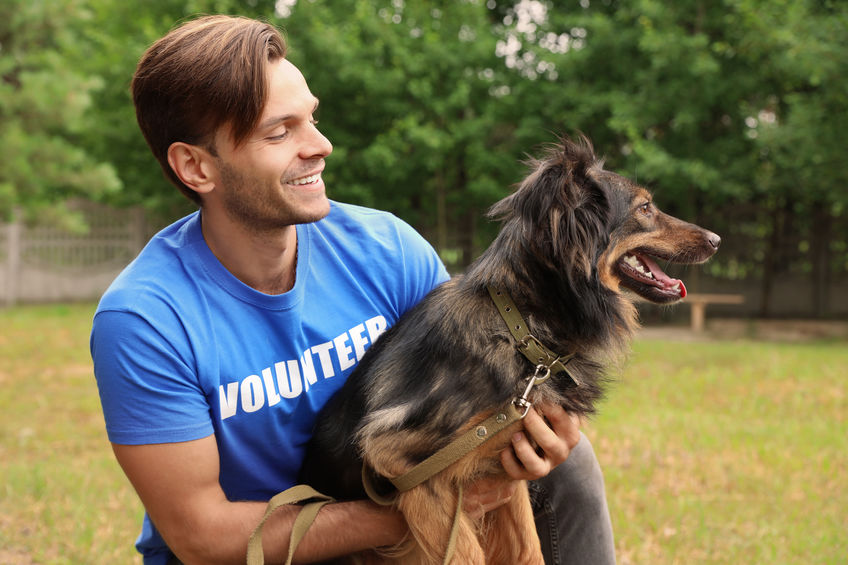

We are starting to take applications for volunteering. As restrictions are starting to ease, we are planning to bring back our volunteers slowly and safely.In the meantime, we have some exciting new volunteering roles in our Visitor Information, Fundraising and Marketing teams.
We have over 200 volunteers at Raystede all committed to giving animals a better life. Their generosity and dedication allows Raystede to provide a caring environment for all our animals. Applications are not open yet and will be open in Due course
Thank you for your understanding and support.
